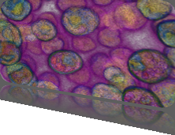

3rd IEEE Symposium on Biological Data Visualization
13-14 October 2013 // Atlanta, GA @ IEEE VIS
13-14 October 2013 // Atlanta, GA @ IEEE VIS

Papers
Paper Submission Categories
BioVis papers typically fall into one of four categories: technique, system, design study, or evaluation. We briefly discuss these categories below. Although your main paper type has to be specified during the paper submission process, papers can include elements of more than one of these categories.
- Technique: novel biological visualization techniques or algorithms, or approaches that significantly extend known biological visualization techniques or algorithms. Relevant previous work must be referenced, and the advantage of the new methods over it should be clearly demonstrated. There should be a discussion of the biological tasks and datasets for which this new method is appropriate, and its limitations.
- System: a blend of visualization algorithms, technical requirements, and design decisions that help biology users deal with the complexity of data management and analysis. The system that is described is both novel and important, and has been implemented. The rationale for significant design decisions is provided, and the system is compared to best-of-breed systems already in use.
- Application/Design Study: design studies or applications of existing visualization techniques to the biology domain, perhaps within a novel system. Such papers typically explore the choices made when applying visualization to a biology area, for example relating the visual encodings and interaction techniques to the requirements of the target task. The results of the Application / Design Study, including insights generated in the biology domain, should be clearly conveyed.
- Evaluation: evaluation of the usage of biological visualization by human users, typically through an empirical study of biological visualization techniques or systems, or reports of experience with an existing set of biological visualizations. Authors are not necessarily expected to implement the systems used in these studies themselves; the research contribution will be judged on the validity and importance of the experimental results to biology visualization as opposed to the novelty of the systems or techniques under study.
Please see the Call for Participation for further details about topics of interest.
Regardless of the category, all BioVis papers are expected to start with a description of the biological context and motivation provide sufficient biological and visualization background end with a discussion where the biological relevance of the paper is discussed.
Important Dates
Abstract submission (MANDATORY)
Tuesday, April 30, 2013
Paper submission
Tuesday, May 7, 2013
Notification
Sunday, July 7, 2013
Camera ready copy
Saturday, August 24, 2013
All deadlines are at 5:00pm Pacific Time (PDT).
Submission
Please prepare your submission according to the instructions for IEEE Visualization & Graphics Technical Committee (VGTC) conferences. LaTeX and Microsoft Word templates are provided.
BioVis uses the Precision Conference System (PCS) to handle its submission and reviewing process. PCS is available at https://precisionconference.com/~vgtc/. When submitting your manuscript please make sure that you submit it to BioVis by clicking the appropriate header in the conference system landing page.
Guidelines for the preparation of camera-ready papers (after acceptance) are also located on the website of the IEEE Visualization & Graphics Technical Committee.
Presenter Information
We have prepared BioVis slide templates, which are available in light and dark for both normal and widescreen displays. Projectors at BioVis will support both formats. More details about projection and AV are available on the VIS website.
Chairs
G. Elisabeta Marai, University of Pittsburgh
Kay Nieselt, University of Tuebingen
Contact: papers@biovis.net
Follow us on Twitter
BioVis 2013 is an official symposium of


BioVis 2013 is affiliated with

Join ISCB and get a 20% member discount at BioVis'13.
BioVis 2013 Supportes
Silver:

Bronze:


Deadlines
Paper Deadline
- Abstract:
April 30, 2013
- Full Paper:
May 7, 2013
Poster Deadline
August 2, 2013
Data Contest Deadline
August 2, 2013
Redesign Contest Deadline
August 2, 2013